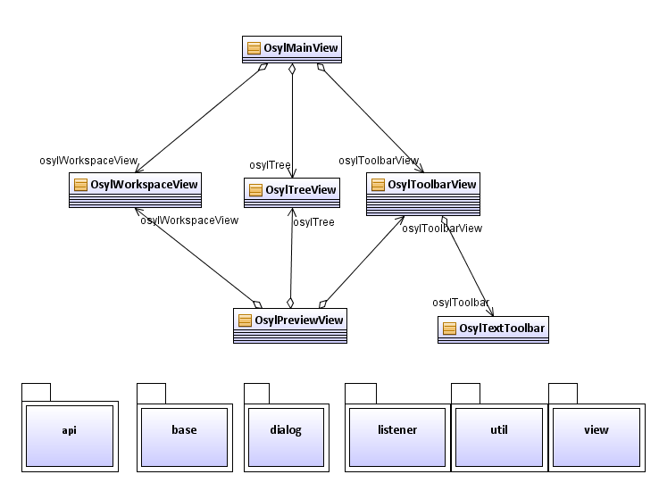

The OsylMainView is the top-level container. In it, there
is the OsylToolbarView on the upper side and containing the
OsylTextToolbar, the OsylTreeView on the left side and the
OsylWorkspaceView on the right side.
Overview of the Package Structure
